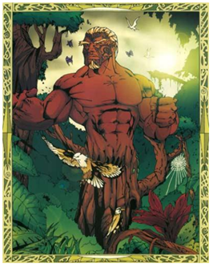

Maori Gods

Tāwhirimatea is the God of
Wind and the Weather.
Tāwhirimatea was against
the separation of his
parents, and to this day
stays close to his father.

Tāne Māhuta, the God of the Forest,
is also the father and God of all who
dwell in the forests (insects, animals,
and especially the birds). It was Tāne
Māhuta who had the strength to
separate his parents by laying flat on
his back and pushing up with his
legs.

Tūmatauenga, or Tū, is our God
of War, and also the God of
People. After the separation of
their parents, Tāwhirimātea
waged war on his brothers. He
subdued a number of them, but
Tūmatauenga proved his equal.
From that time on there has
been an ongoing battle between
the weather (Tāwhirimātea) and
people (Tūmatauenga).

Tangaroa is the God of the Sea and
all those who live in the ocea. Māori
believe that water is an energy, with
many moods. It can be calm and life
giving, or dangerous and destructive.
This energy is called Tangaroa. One
tikanga speaks of never turning your
back on Tangaroa when by the
seaside, as this is disrespectful of his
mana.

Rongomatāne is the God of
Cultivtated food, and the kumara.
When Tāwhirimātea was venting his
anger on his brothers, both Rongo and
Haumiatiketike, took refuge in the
body of Papa, mother earth, who hid
them until the storm passed. In the
Māori language, ‘rongo’ means peace.
Rongo is generally portrayed as the
creator of the kūmara, a plant
associated with peace.
Haumiatiketike is our God of Uncultivated food. Haumia
agreed to the forced separation of his parents. Because
of this he was subjected to the fury of his brother
Tāwhirimātea, who would have killed him if their
mother had not hidden him in her body, that is, in the
ground. While he escaped from Tāwhirimātea, he was
later discovered by Tū, god of war (here representing
humankind), who saw Haumia's hair sticking up out of
the earth. Haumia contrasts with his brother Rongo, the
god of the kūmara and all cultivated plants.


Rūaumoko is the god of earthquakes, volcanoes and seasons
He is the youngest son of Ranginui and Papatūānuku. After
Rangi and Papa were separated by their sons, Rangi cried, and
his tears flooded the land. To stop this, the sons decided to
turn Papa face down, so Rangi and Papa could no longer see
each other's sorrow. Rūaumoko was at his mother's breast
when this happened, so he was carried into the world below.
He was given fire for warmth by Tama-kaka, and his
movements below the earth cause earthquakes and volcanoes